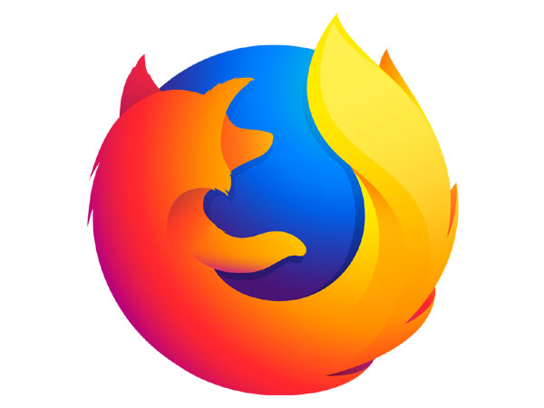

Welcome to Mozilla
Explore the power of open web technologies.
About Mozilla

Mozilla is a global community of technologists, thinkers, and builders working together to keep the Internet alive and accessible. Founded in 1998, our work is guided by the Mozilla Manifesto — a set of principles that put people at the center of the Internet.
Our Products
Mozilla creates products that champion privacy, security, and freedom online. Here's what we offer:
- Firefox – A fast, private, and secure browser built for you.
- Firefox Developer Edition – Cutting-edge tools for web developers.
- Firefox Focus – A minimalist browser with powerful privacy features.
- Mozilla VPN – Fast, secure, and reliable VPN service to protect your privacy online.
Learn More About Mozilla
Watch this short video to discover how Mozilla is building a healthier internet for everyone:
Join Mozilla's Mission
We're building an internet that puts people before profit. Join us in shaping a future where privacy, security, and openness thrive.
Learn More